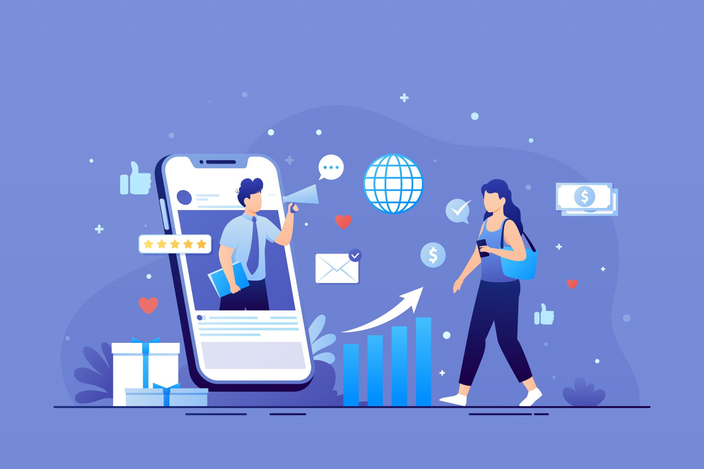

🌟Plan Élite
Este plan esta diseñado tanto para empresas grandes como para emprendedores que necesitan una atención más personalizada y recursos exclusivos. También crear una comunidad altamente comprometida, posicionar la marca como líder en su industria y obtener un retorno sobre la inversión (ROI) medible.
Aumentar las ventas directas, mejorar el reconocimiento de marca a nivel nacional o internacional, optimizar la tasa de conversión, y maximizar la fidelidad de los clientes.
Estrategia de contenido visual: Fotos, videos, y gráficos diseñados por un equipo creativo con un alto nivel profesional, con enfoque en storytelling y experiencia de usuario. Video marketing: Producción de videos profesionales y contenido audiovisual premium (incluyendo producción cinematográfica si es necesario). Marketing de influencers: Colaboraciones estratégicas con influencers y figuras de alto perfil, segmentando a aquellos que realmente impactan en el nicho objetivo
Asesoría directa: Acceso constante a un equipo especializado que proporcionará asesoría y atención personalizada durante toda la campaña. Soporte continuo: Disponibilidad para ajustar cualquier aspecto de la campaña de forma ágil y efectiva.
Estrategia de Inbound Marketing: Generación de contenido educativo, newsletters, lead magnets y materiales descargables para atraer leads de calidad. Fidelización de clientes: Implementación de estrategias para mantener a los clientes comprometidos, incluyendo programas de lealtad, ofertas exclusivas, y más. Estrategias de CRM: Uso de herramientas de gestión de relaciones con los clientes (CRM) para personalizar la comunicación y optimizar el ciclo de vida del cliente.